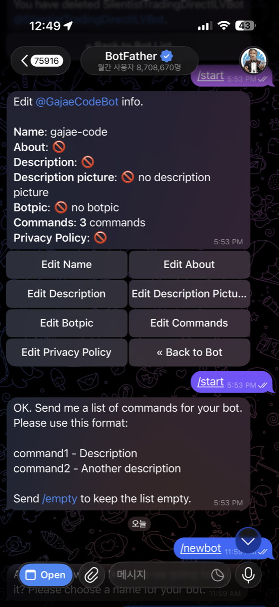
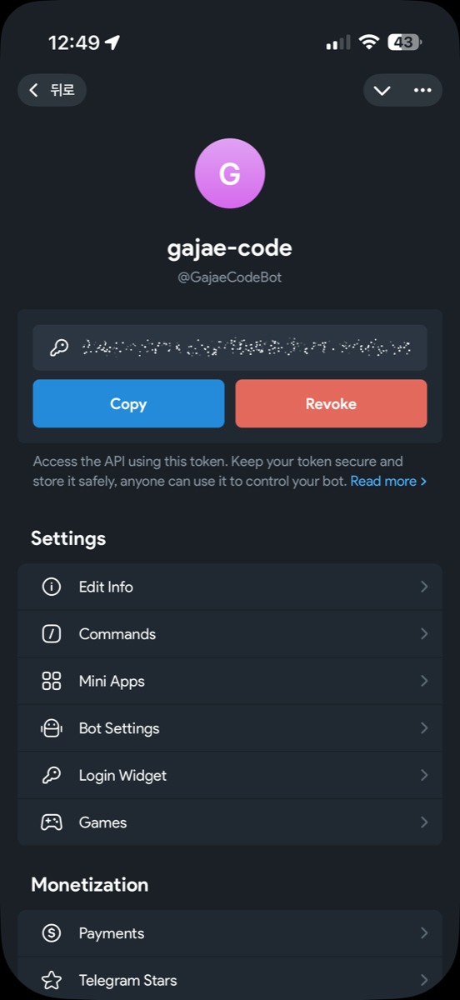
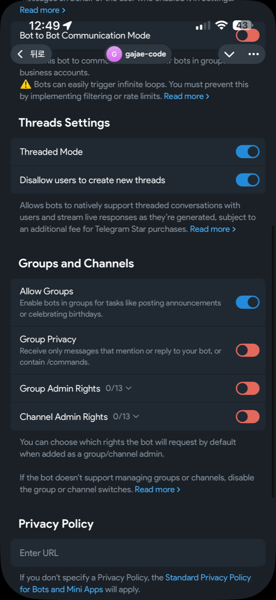

Documentation
Telegram notification onboarding
Create a Telegram bot with BotFather, pair one private chat, and let Gajae Code route asks and replies through the managed notifications daemon.
1. Create a new bot with BotFather
Telegram bots are created and configured entirely through BotFather, Telegram's official bot-management bot. Follow these steps in the Telegram app (mobile or desktop):
- Open BotFather. Search for
@BotFatherin Telegram and confirm the account shows the blue verified checkmark, then press Start to load the command menu. - Run
/newbot. Send/newbot. BotFather replies asking for a display name. - Choose a display name. This is the friendly name shown in chats (for example
Gajae Code Notifier). It can be changed later with/setname. - Choose a username. Send a unique username that ends in
bot(for examplegajae_code_notify_bot). Per Telegram's rules, usernames are 5–32 characters, case-insensitive, Latin letters/numbers/underscores only, and the username cannot be changed later. - Copy the token. BotFather replies with an HTTP API token shaped like
123456789:AAH...rest. Copy it now and keep it secret — treat the token like a password. Use/tokento regenerate it if it leaks.
See also the Telegram Bot API for the full command surface.

/newbot in BotFather, name the bot (here gajae-code → @GajaeCodeBot), then optionally set its commands.
2. Enable Threaded Mode in BotFather
Threaded Mode is a BotFather toggle that lets your bot open topics inside the private chat, so it can manage several threaded conversations in parallel instead of one flat timeline. Telegram highlights this as ideal for AI chatbots, and it lets Gajae Code keep each session in its own topic thread with its own context updates, output, and ask buttons.
- Open your bot in BotFather. Send
/mybotsto @BotFather, then select the bot you created in step 1. - Open Bot Settings. Tap Bot Settings to reach the per-bot configuration menu.
- Toggle Threaded Mode on. Enable Threaded Mode. This turns on topics in private chats so the bot can create and route messages into per-session threads.

3. Pair GJC with a private chat
gjc notify setupThe setup command prompts for the BotFather token, validates it with Telegram getMe, waits for a message from a private chat via getUpdates, then writes notifications.telegram.botToken, notifications.telegram.chatId, and notifications.enabled.
4. Non-interactive setup
gjc notify setup --token <botToken> --chat-id <chatId>
gjc notify setup --token <botToken> --chat-id <chatId> --redact--redact suppresses idle summaries and streamed content before remote delivery. Ask questions/options stay visible because they must be answerable on the phone.
5. Check and control it
gjc notify statusStatus prints enabled state, a masked token, chat id, and redaction state. Inside a running session, /notify status, /notify off, and /notify on control that session without leaking secrets.
6. Runtime model
After setup, sessions auto-connect unless GJC_NOTIFICATIONS=0 is set. Each session publishes a loopback endpoint under .gjc/state/notifications/<sessionId>.json. The Telegram daemon scans those endpoints and owns exactly one getUpdates long poller per bot token/chat pair, avoiding Telegram 409 Conflict failures.
With Threaded Mode enabled, Telegram threaded conversations can show context updates, live/finalized output, image attachments, inline ask buttons, free-text replies, typing indicators, and double-check acknowledgements — and bots can stream live responses as they are generated instead of waiting for a full reply.
Troubleshooting
getMefails: the BotFather token is invalid or revoked.- Setup times out: send any message directly to the bot from a private Telegram chat.
- 409 conflict: stop any other process polling the same bot token; let the managed daemon own polling.
- No notifications: check
gjc notify status, ensureGJC_NOTIFICATIONSis not0, and verify the session was not disabled with/notify off.